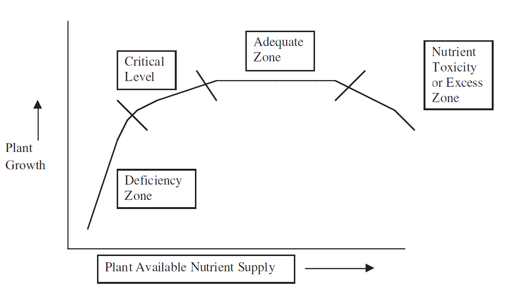

Όλες οι ουσίες που χρειάζεται ένας οργανισμός για να ζήσει και να αναπτυχθεί ονομάζονται θρεπτικά συστατικά. Στην υδάτινη οικολογία, ο όρος συχνά χρησιμοποιείται για να δείξει την ποσότητα την ποσότητα των φωσφορικών (PO43-) και των νιτρικών (NO3-) στο σύστημα.
Στα πλαίσια της αποστολής μας είναι σημαντικό να διαπιστώσουμε ότι τα φυτά (παραγωγοί) χρησιμοποιούν φώσφορο και άζωτο για την παραγωγή πρωτεϊνών, νουκλεοτιδίων (DNA) και άλλων οργανικών μορίων. Έτσι στην απουσία του αζώτου και του φωσφόρου, ένα φυτό δεν μπορεί να αναπτυχθεί.
Ποια είναι η σχέση μεταξύ της συγκέντρωσης των θρεπτικών συστατικών και του ρυθμού πρωτογενούς παραγωγής; Ένα κατάλληλο πλαίσιο για την κατανόηση της σχέσης αυτής είναι το λεγόμενο "εύρος ανοχής” (range of tolerance). Οι οργανισμοί μπορούν να ζήσουν μέσα από μια σειρά αβιοτικών συνθηκών. Αν εξετάσουμε το εύρος της θερμοκρασίας, θα υπάρχουν δύο τιμές- μια ελάχιστη θερμοκρασία και μια μέγιστη θερμοκρασία – που θέτουν το ανώτατο και το κατώτατο όριο για την επιβίωση ενός είδους. Κάτω από το ελάχιστο και πάνω από το μέγιστο, οι οργανισμοί θα βιώσουν σε μεγάλο βαθμό ένα φυσιολογικό άγχος για την επιβίωση τους. Κάπου μεταξύ του ελαχίστου και του μεγίστου βρίσκεται το βέλτιστο εύρος, στο οποίο η θερμοκρασία για το συγκεκριμένο είδος είναι πιο ευνοϊκή. Παρόμοια, και τα είδη των φυτών έχουν ένα εύρος ανοχής για κάθε θρεπτικό συστατικό. Κάτω από ορισμένη συγκέντρωση ένα φυτό θα υποφέρει από ορισμένα συμπτώματα ανεπάρκειας. Εξαιρετικά ψηλές συγκεντρώσεις ενός θρεπτικού συστατικού μπορεί να έχουν τοξικές επιδράσεις. Οι συγκεντρώσεις κάτω από τις οποίες τα φυτά έχουν συμπτώματα ανεπάρκειας είναι διαφορετικές για κάθε θρεπτικό συστατικό. Υπάρχουν επίσης διαφορές μεταξύ διαφορετικών ειδών: μερικά φυτά μπορούν να αντεπεξέρθουν στην έλλειψη καλύτερα από άλλα.
Υποθετικό έυρος ανοχής για ένα θρεπτικό συστατικό.